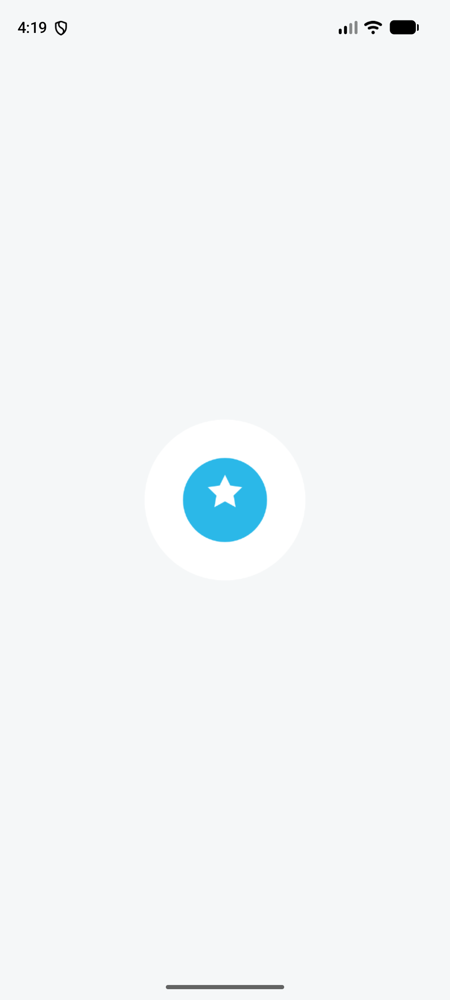
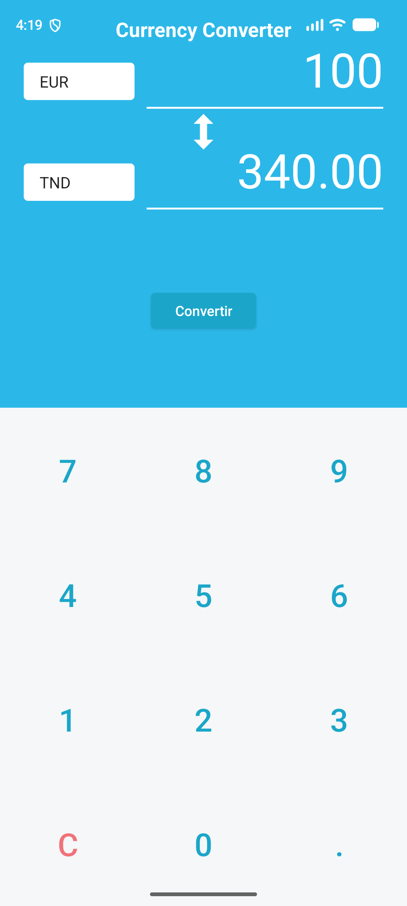
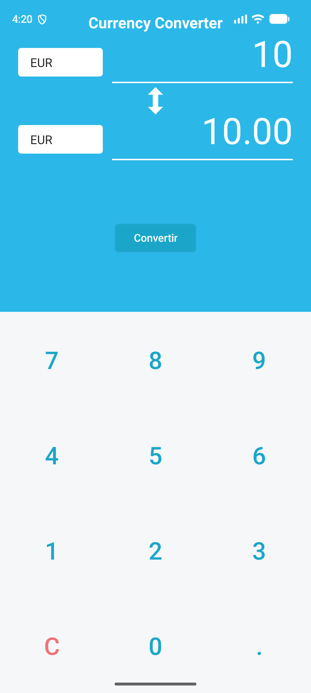

Compte rendu de TP Android Kotlin - Convertisseur de devises
L'application convertit un montant saisi d'une devise source vers une devise cible a partir de taux fixes. Elle est developpee en Kotlin avec Android Studio, avec un SDK minimum API 24 et le View Binding active. Le projet se compose d'une seule Activity (MainActivity) et d'un seul layout (activity_main.xml).
La zone d'affichage occupe environ 45 % de la hauteur. Un Guideline horizontal place a 45 % separe cette zone du clavier. Un View bleu turquoise (code #2BB8E8) sert de fond a la zone haute, tandis que le clavier utilise un fond clair.
Le titre, le montant et le resultat sont des TextView. Le montant et le resultat sont alignes a droite, en 48sp, et soulignes grace a un drawable layer-list place en background. Les deux Spinner sont alimentes par un ArrayAdapter construit depuis le string-array devises. Le bouton d'inversion est un ImageButton utilisant un vector drawable.
Le clavier est un TableLayout de 4 TableRow et 3 colonnes. Chaque touche est un Button sans bordure, en 32sp. Les chiffres sont bleu #1BA6C9 et la touche C est rouge #F0727A. Tous les textes sont dans strings.xml, les couleurs dans colors.xml et les dimensions dans dimens.xml. L'ecran est bloque en portrait dans le manifeste.

Ecran au demarrage
Les taux sont stockes dans une Map Kotlin declaree dans MainActivity. Ils representent la valeur d'une devise pour 1 EUR. La conversion passe par l'euro comme devise pivot :
Le resultat est formate avec String.format et Locale.US pour garantir un point decimal, puis affiche dans tvResultat. Quand source et cible sont identiques, le calcul redonne exactement le montant initial.
La conversion est relancee automatiquement a chaque frappe et a chaque changement de devise grace a un OnItemSelectedListener. Le bouton Convertir reste fonctionnel et affiche le Toast en cas de montant nul.
| Montant | Source | Cible | Resultat attendu | Resultat obtenu |
|---|---|---|---|---|
| 120 | USD | EUR | 102.56 | 102.56 |
| 100 | EUR | TND | 340.00 | 340.00 |
| 50 | GBP | USD | 67.24 | 67.24 |
| 10 | EUR | EUR | 10.00 | 10.00 |
120 USD vers EUR

100 EUR vers TND
50 GBP vers USD

10 EUR vers EUR
La principale difficulite etait liee a la version d'Android Gradle Plugin. AGP 9 integre desormais la compilation Kotlin : l'ancien plugin org.jetbrains.kotlin.android provoquait une erreur de conflit d'extension. Il a donc ete retire du projet.
Une autre difficulite etait l'alignement du montant et du resultat avec les Spinner dans la zone turquoise. L'utilisation des contraintes de baseline et d'un drawable de soulignement a permis d'obtenir un rendu stable.
L'application respecte l'ensemble des objectifs du TP. La conversion est correcte pour les quatre cas de test, le clavier personnalise fonctionne sans clavier systeme et le bouton d'inversion recalcule le resultat. Le bonus de conversion automatique est egalement implemente.